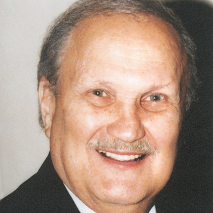

Select the number that corresponds to the above Hall of Fame Member you want to know more about.

10
Al WahnonFloor Covering News Inducted 1992
As a dedicated editor and publisher, Al Wahnon's floor covering indus- try preeminence is well-recognized via his coverage for more than 50 years, a period coinciding with many of the industry's most significant developments. During his 31-year tenure with Floor Covering Weekly, Wahnon was largely responsible for its status as the industry's domi- nant publication. In 1986, he started his own publication, Floor Covering News, and his firm hand and supervision remain evident in all aspects of its coverage. He was at the forefront of the carpet industry's crusade against "boiler room" operations. Qualified as an expert wit- ness, he testified frequently before the Federal Trade Commission hear- ings in Washington, D.C. In 1980, Wahnon was a member of an offi- cial U.S. delegation of industry executives to India and Bangladesh probing the practices of these countries' jute industries and helping ensure a consistent supply of high-quality products. As a dedicated editor and publisher, Al Wahnon's floor covering indus- try preeminence is well-recognized via his coverage for more than 50 years, a period coinciding with many of the industry's most significant developments. During his 31-year tenure with Floor Covering Weekly, Wahnon was largely responsible for its status as the industry's domi- nant publication. In 1986, he started his own publication, Floor Covering News, and his firm hand and supervision remain evident in all aspects of its coverage. He was at the forefront of the carpet industry's crusade against "boiler room" operations. Qualified as an expert wit- ness, he testified frequently before the Federal Trade Commission hear- ings in Washington, D.C. In 1980, Wahnon was a member of an offi- cial U.S. delegation of industry executives to India and Bangladesh probing the practices of these countries' jute industries and helping ensure a consistent supply of high-quality products.